Trường PTDTBT TH & THCS Măng Cành · Năm học 2026–2027
Báo cáo kết quả — kèm ảnh chụp minh họa từng khu chức năng
| Nhóm | Xem phần | Cần đăng nhập? |
|---|---|---|
| Học sinh & phụ huynh | Xem thời khóa biểu, sổ tay học sinh, hướng dẫn | Không cần |
| Giáo viên | Lịch dạy của tôi, thông báo | Có |
| Ban giám hiệu | Tổng quan, phê duyệt và công bố lịch | Có |
| Quản trị viên | Xếp lịch, dạy thay, nhập từ Excel, tài khoản… | Có |
Mỗi tuần học có thời khóa biểu của riêng mình. Người phụ trách có thể xếp lịch cho tuần nào cũng được — tuần này, tuần sau, hoặc sửa lại tuần đã qua nếu cần.
Lịch mới luôn bắt đầu là bản nháp — chỉ người xếp lịch mới thấy. Khi xếp xong, gửi cho ban giám hiệu duyệt rồi bấm công bố. Ngay lúc đó:
Nhờ vậy, trang công khai không bao giờ hiện lịch dở dang.
Khi có giáo viên dạy thay, tiết bị hủy, tiết dạy bù hoặc lịch mới được công bố — hệ thống tự gửi thông báo đến đúng người liên quan (giáo viên được xếp dạy thay, học sinh lớp bị ảnh hưởng). Ai bật thông báo trên điện thoại thì nhận được tin ngay cả khi không mở trang.
Hệ thống ghi lại ai đã làm gì, lúc nào — muốn truy vết khi có thắc mắc về lịch thì mở trang Nhật ký là rõ.
Nếu đã cài ứng dụng lên điện thoại, phần lịch mình đã xem vẫn mở được khi mạng yếu hoặc mất mạng.
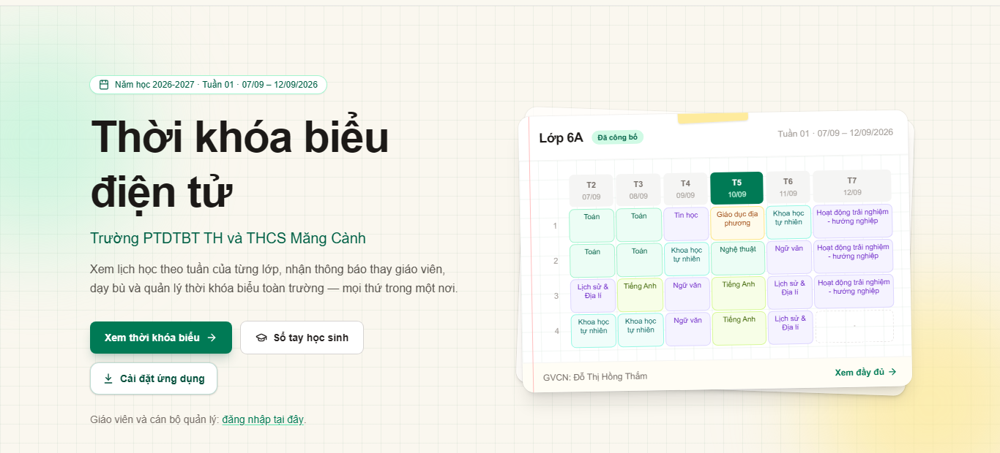
Hình 01a — Khối mở đầu. Tên trường cùng 3 lối đi: Xem thời khóa biểu (học sinh, phụ huynh — không cần tài khoản), Sổ tay học sinh, và Đăng nhập dành cho giáo viên, cán bộ.
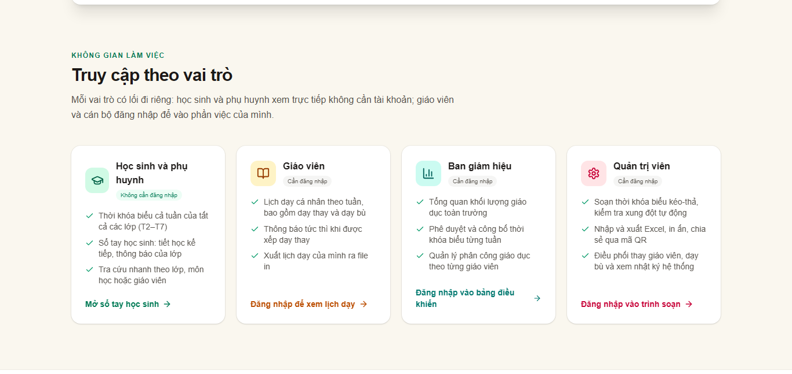
Hình 01b — Tính năng nổi bật. Xem được khi mất mạng, nhận thông báo trên điện thoại, tìm kiếm nhanh (gõ không dấu vẫn ra), in và xuất Excel, mã QR chia sẻ link lớp.
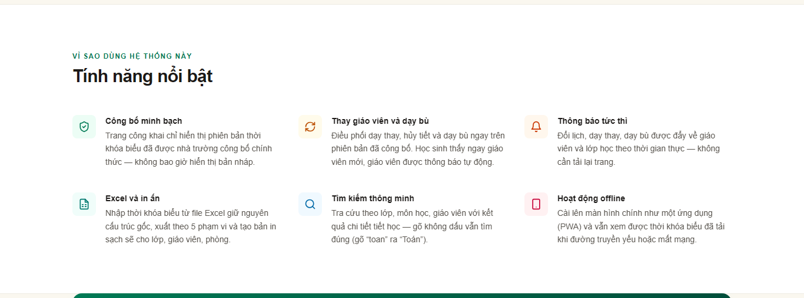
Hình 01c — 4 nhóm người dùng. Mỗi thẻ dẫn đúng phần của mình.
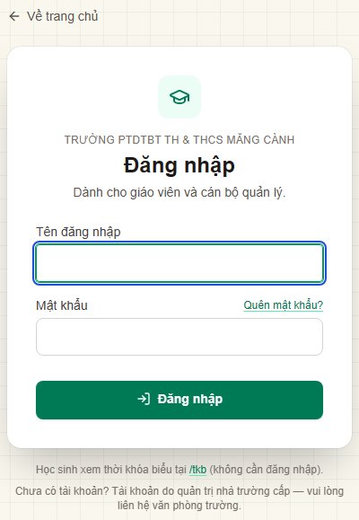
Hình 02 — Đăng nhập. Dùng tài khoản do nhà trường cấp. Nhập sai nhiều lần trong thời gian ngắn sẽ bị tạm khóa để chống dò mật khẩu. Đăng nhập xong, hệ thống tự chuyển đến đúng phần việc của mỗi người.
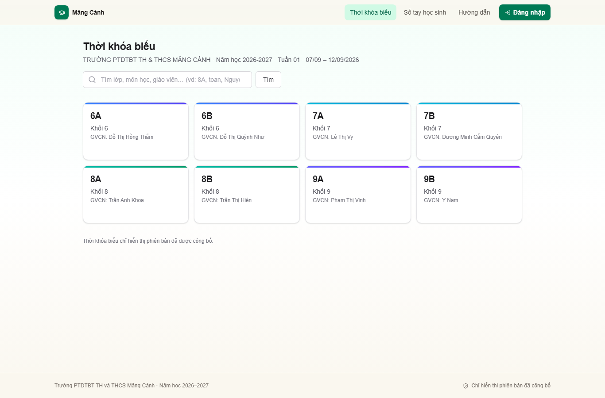
Hình 03 — Chọn lớp. Hiện tuần đang áp dụng và 8 thẻ lớp kèm giáo viên chủ nhiệm. Ô tìm kiếm rất "thông minh": gõ toan ra môn Toán, gõ nguyen thi ra các thầy cô họ Nguyễn Thị, gõ 8a ra lớp 8A.
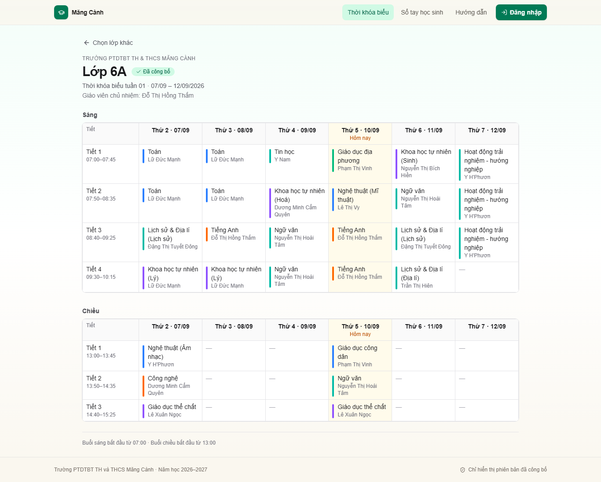
Hình 04 — Lớp 6A. Lịch cả tuần chia rõ buổi Sáng (07:00–11:05) và buổi Chiều (13:00–15:25). Mỗi ô ghi môn học, giáo viên và phòng học. Nhãn Đổi GV cho thấy tiết nào có giáo viên dạy thay — học sinh nhìn là biết ngay (đây là dữ liệu minh họa, tạo bằng đúng tính năng Dạy thay của hệ thống, xem trang 11).
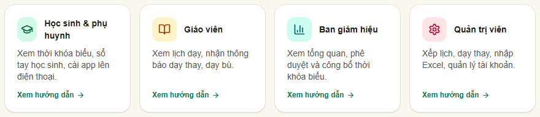
Hình 05a — Trang Hướng dẫn sử dụng. 4 thẻ bấm nhanh đến đúng phần cho từng vai trò.
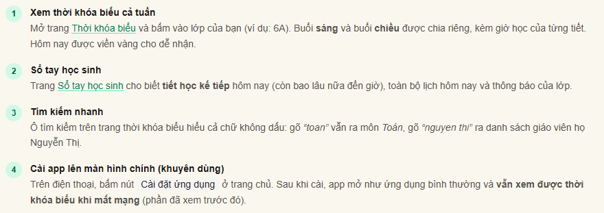
Hình 05b — Hướng dẫn từng bước. Viết bằng tiếng Việt dễ hiểu: cách xem lịch, cài app lên điện thoại, bật thông báo, nhập Excel…
Đây là "Sổ tay học sinh" — một ứng dụng nhỏ riêng cho học sinh, có thanh menu ở đáy màn hình luôn hiện hữu: Trang chủ · Thời khóa biểu · Thông báo · Hồ sơ.
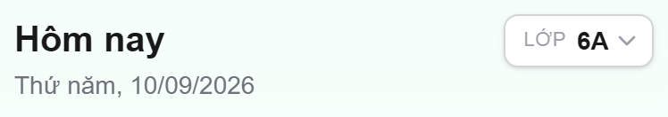
Hình 06a — Đầu trang. Chào lớp đang chọn + hộp đổi lớp (bấm là đổi ngay lập tức).
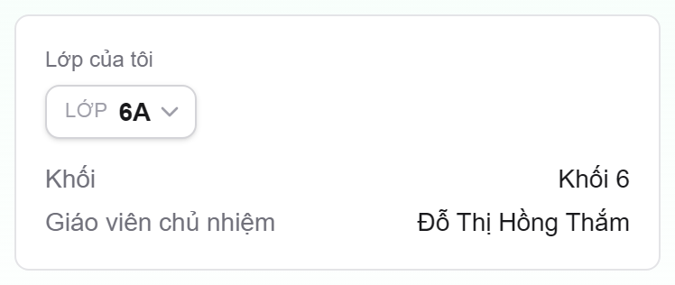
Hình 09 — Hồ sơ. Lớp của tôi (đổi ngay tại đây), giáo viên chủ nhiệm, khối, và khung giờ buổi sáng / buổi chiều.
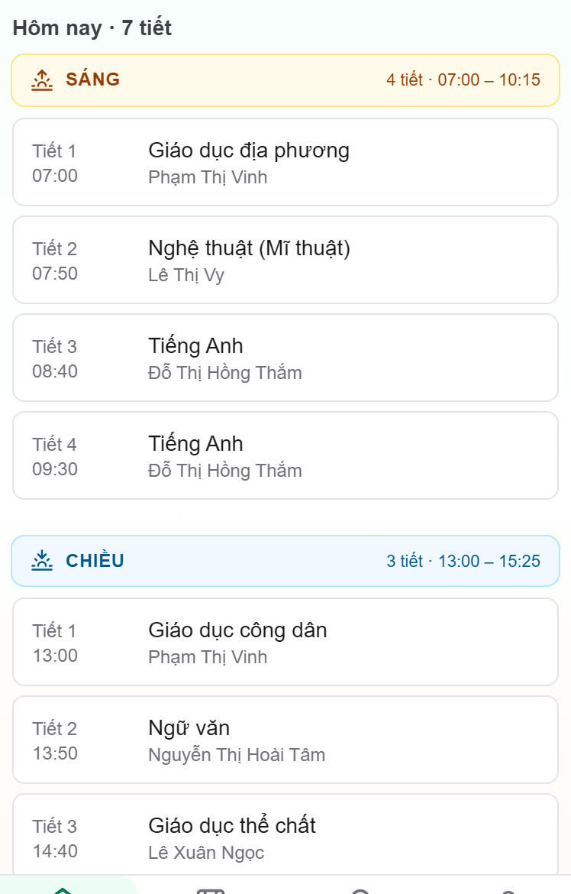
Hình 06b — Lịch hôm nay. Các tiết chia thành 2 nhóm rõ ràng: Sáng (nhãn hồng kèm giờ học) và Chiều (nhãn xanh). Mỗi tiết ghi môn, giáo viên, phòng. Nếu có thay đổi thì có nhãn riêng: Đổi GV, Đã hủy, Dạy bù. Đầu mỗi nhóm ghi luôn số tiết và khoảng giờ (ví dụ "4 tiết · 07:00 – 10:15").
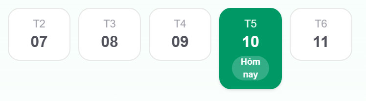
Hình 07a — Dải chọn ngày. Các nút Thứ 2 → Thứ 7 to rõ, dễ bấm; ngày hôm nay được tô nổi bật.
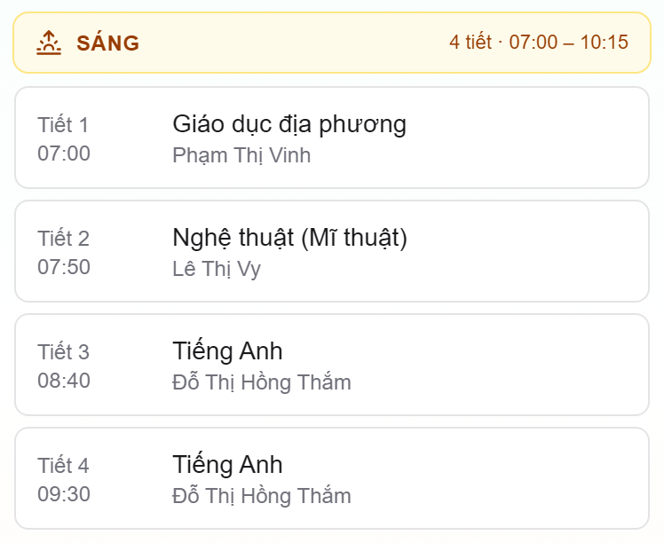
Hình 07b — Chi tiết một ngày. Buổi sáng với giờ học của từng tiết; đầu trang ghi lớp và giáo viên chủ nhiệm.
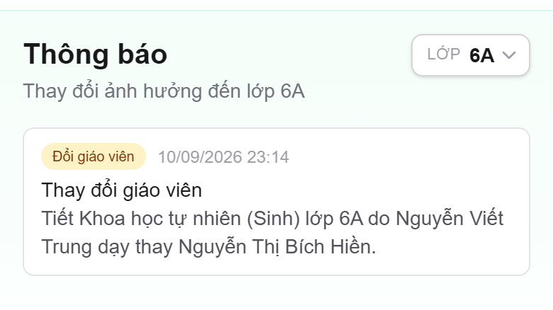
Hình 08 — Thông báo của lớp. Mục Đổi giáo viên trong ảnh là thông báo thật (tạo bằng tính năng Dạy thay để minh họa): ghi rõ tiết nào, ai dạy thay cho ai. Ngoài ra còn nhận: lịch mới được công bố, tiết bị hủy, tiết dạy bù — mỗi loại một nhãn màu riêng.
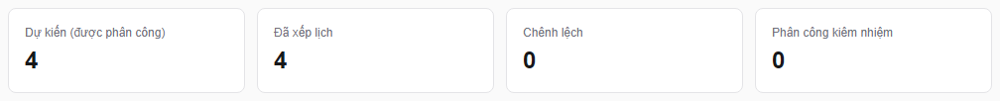
Hình 10a — Khối lượng công tác trong tuần. Bốn ô số: Dự kiến (được phân công) · Đã xếp lịch (thực tế) · Chênh lệch · Kiêm nhiệm — nhìn một hàng là biết tuần này đủ tiết hay thiếu tiết.
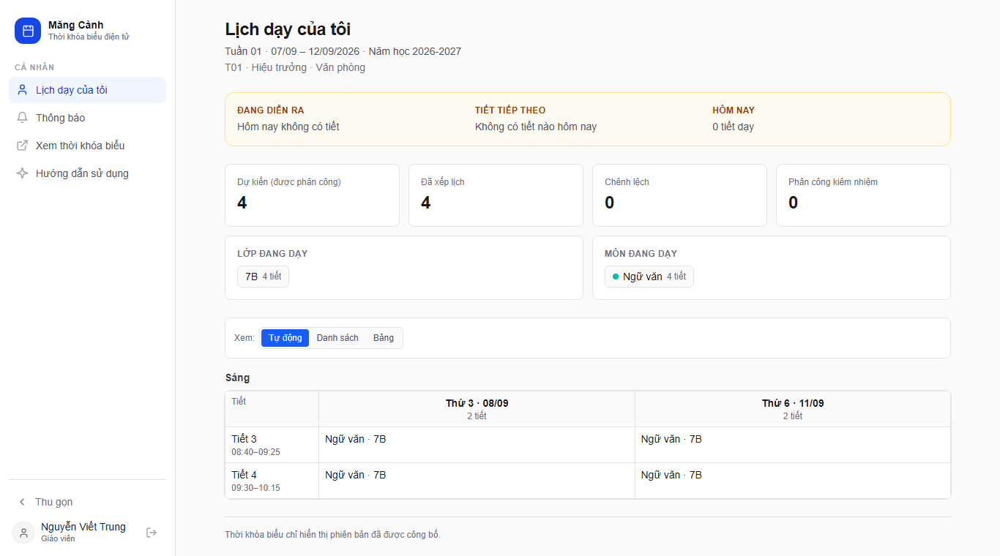
Hình 10b — Lịch dạy của tôi. Menu dọc bên trái theo đúng quyền của giáo viên. Khung "Hôm nay" và lịch cả tuần — có thể đổi giữa dạng danh sách và dạng bảng, lọc theo lớp hoặc theo môn. Giáo viên chỉ thấy dữ liệu của chính mình.
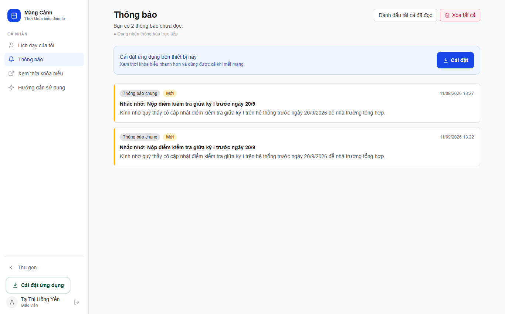
Hình 11 — Thông báo cho giáo viên. Mục Dạy thay trong ảnh là thông báo thật: ai nghỉ, tiết nào, lớp nào — giáo viên được xếp thay sẽ nhận ngay khi quản trị vừa tạo. Ngoài ra còn nhận: tiết bị hủy, tiết dạy bù, lịch mới công bố. Bấm Bật thông báo để nhận về điện thoại.
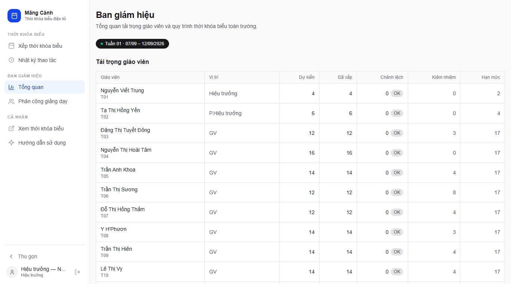
Hình 12 — Tổng quan. Bảng khối lượng của từng giáo viên (so sánh được phân công với thực tế) và danh sách các phiên bản thời khóa biểu kèm trạng thái. Bản nào đang chờ duyệt thì có nút phê duyệt ngay tại đây.
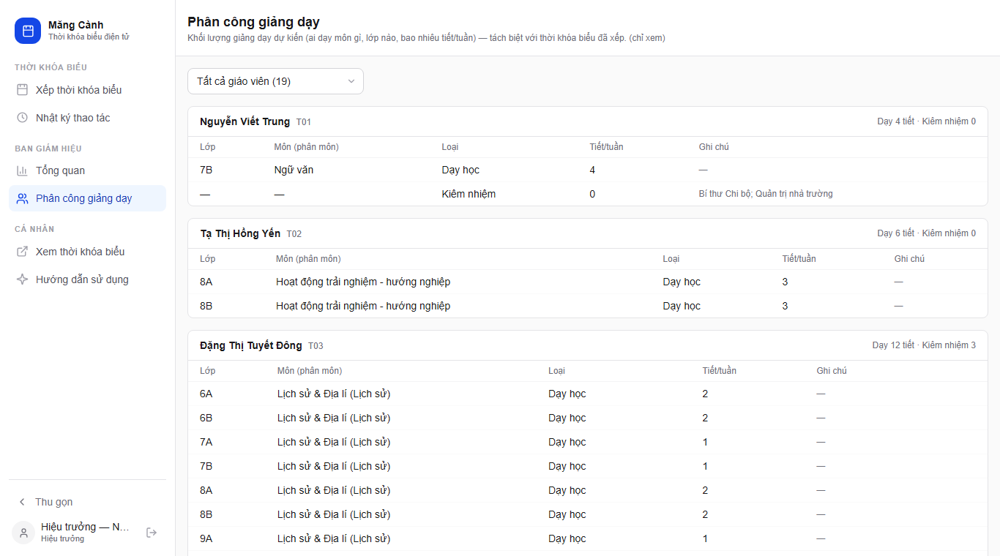
Hình 13 — Phân công giảng dạy. Bảng theo từng giáo viên: lớp nào, môn nào, bao nhiêu tiết — nhìn nhanh toàn trường.
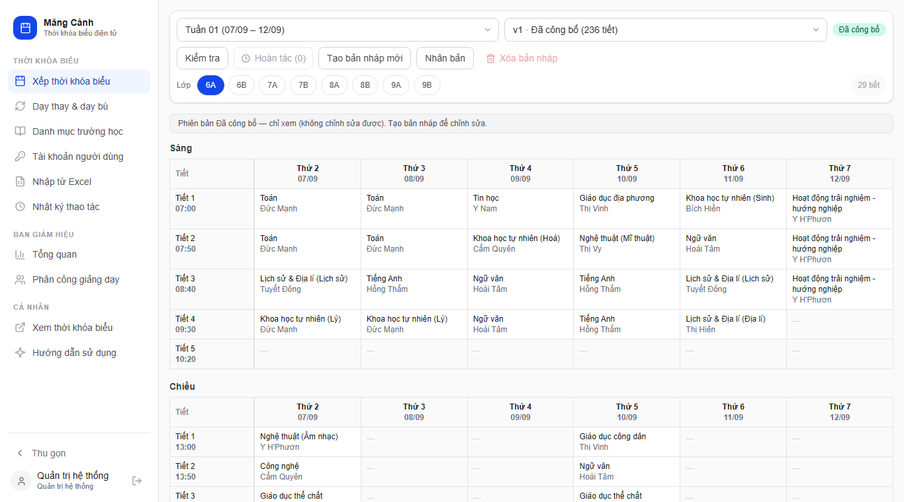
Hình 14 — Màn hình xếp lịch. Bảng tuần: cột là các lớp, hàng là các tiết trong buổi. Ô nào có bài thì hiện môn và giáo viên. Thanh công cụ phía trên: chọn tuần, tạo bản nháp mới, sao chép cả tuần trước, sao chép một ngày, sao chép một lớp.
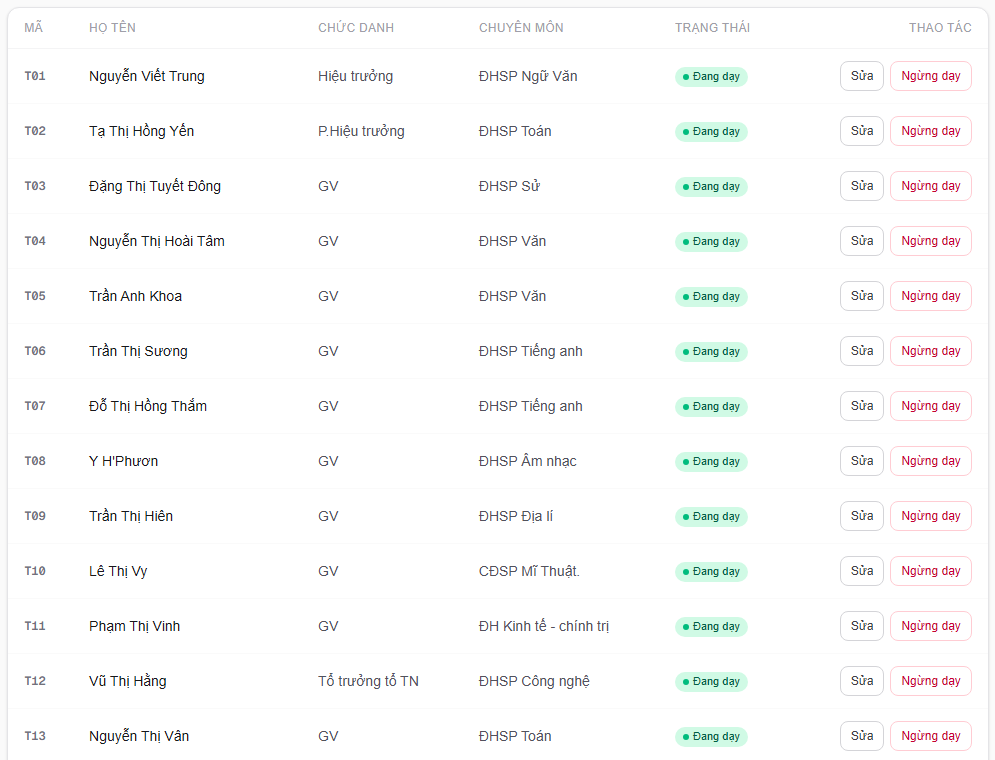
Hình 15 — Danh mục. Quản lý danh sách: giáo viên (kèm tên viết tắt để nhập Excel nhận ra), lớp, môn học, phòng học, và phân công giảng dạy dự kiến.
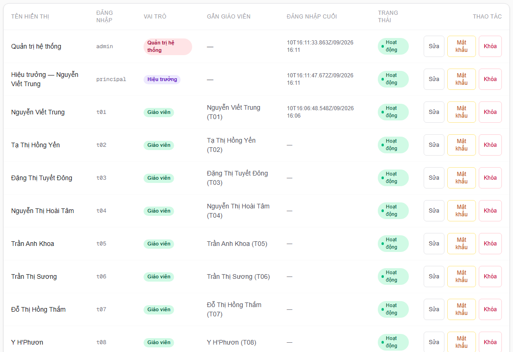
Hình 16 — Tài khoản. Tạo tài khoản mới cho giáo viên, cán bộ; gán quyền; cấp lại mật khẩu khi ai đó quên (mật khẩu mới chỉ hiện một lần để copy đưa cho người đó); khóa tài khoản khi cần. Không thể tự khóa tài khoản của chính mình.
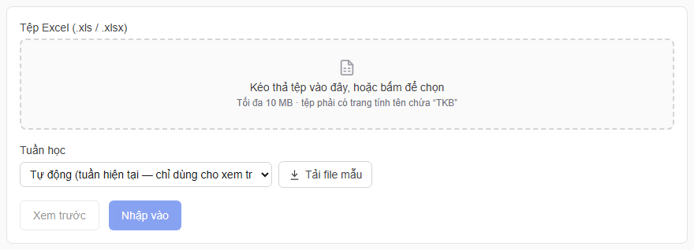
Hình 17a — Nhập lịch từ Excel. Chọn tuần, tải file mẫu về điền, rồi bấm Xem trước.
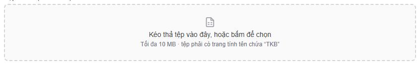
Hình 17b — Kéo-thả tệp. Kéo file Excel thẳng vào khung này. Chỉ nhận tệp Excel (.xls hoặc .xlsx), tối đa 10 MB.
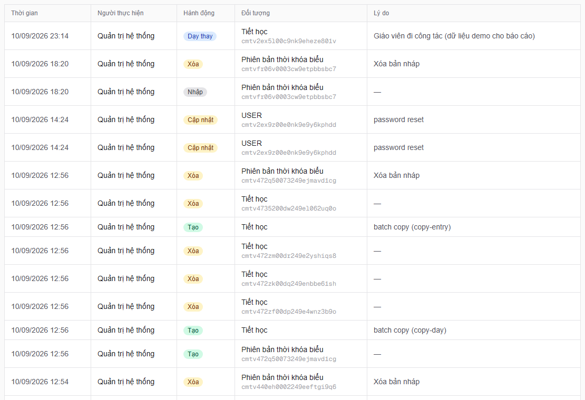
Hình 18 — Nhật ký thao tác. Ghi lại ai đã làm gì, lúc nào, với nội dung nào. Hai dòng đầu trong ảnh chính là việc tạo rồi hủy một lần dạy thay để chụp ảnh minh họa — chứng tỏ mọi thao tác đều để lại dấu vết, có thể truy vết khi cần.
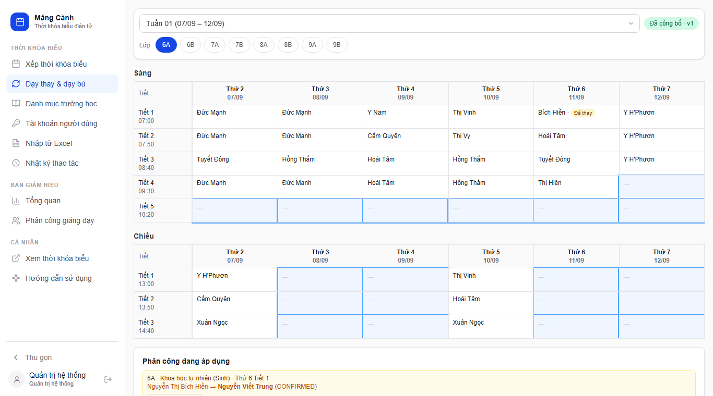
Hình 19 — Dạy thay & dạy bù. Ảnh chụp lúc đang có một lần dạy thay thật (thầy Nguyễn Viết Trung dạy thay tiết sáng thứ Sáu 11/09 cho lớp 6A — dữ liệu minh họa). Bấm vào một tiết để: chọn giáo viên dạy thay (hệ thống chỉ gợi ý thầy cô đang rảnh) · hủy tiết · hoặc tạo tiết dạy bù vào ô trống khác.
| Nội dung kiểm tra | Kết quả |
|---|---|
| Bài kiểm tra tự động của hệ thống | 128/128 bài đạt |
| So khớp 236 tiết của Tuần 01 với bảng tính gốc của trường | Khớp 100% — đủ 19 giáo viên, 8 lớp |
| 100 người mở trang cùng một lúc | Tất cả vào được, không ai lỗi |
| 200 người mở trang cùng một lúc | Tất cả vào được |
| Truy cập thử từ mạng internet (tất cả các trang, đăng nhập) | Mở được hết, hoạt động bình thường |
Giờ cao điểm (ví dụ 7h sáng cả trường mở ứng dụng cùng lúc): mọi người vẫn vào được, chậm nhất khoảng 2–5 giây ngay lúc đông nhất rồi nhanh trở lại bình thường.